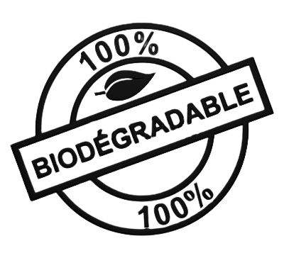
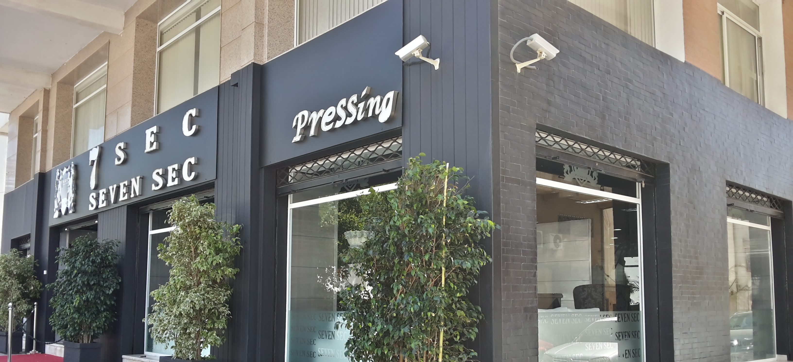

Seven Sec
Nous nettoyons votre vie professionnelle


Nous nettoyons votre vie professionnelle

Nos propositions sont destinées à tous professionnel de l'hôtellerie, de la restauration et des villages de vacances qui ont un souci de pressing de tout type de lingerie.
Quel que soit la taille du club, petit ou grand, individuel ou d'équipe nous vous garantissons dans le délai de votre compétition le pressing de tout votre matériel pour qu'il soit propre et vous donne la motivation pour atteindre vos objectifs.
L’usine et son personnel trouveront aussi le temps de s'occuper seulement de leur activité et améliorer leur productivité. Nous on s'occupe du reste, nous vous garantissons la propreté de l'usine et des vêtements du personnel.
Il est de même pour toute entreprise qui souhaite améliorer son image de propreté notamment les écoles. Nous pouvons étudier votre demande et répondre a tous vos besoins dans le domaine.
Grace a l'expérience de notre personnel et de nos partenaires qualifies et très expérimentés dans le domaine, SevenSec pressing écologique vous apporte une réponse précise a vos besoins spécifiques en matière de pressing et de blanchisserie, pour les professionnels ainsi que les individus.
Nous avons voulu créer une entreprise citoyenne capable de répondre aux besoins du marché du pressing à la fois écologique et économique. Elle se veut être un trait d'union de soin entre ses clients fidèles et leurs propres produits. C'est donc de notre vocation de vous offrir un lieu propre et moderne gardé par une équipe qualifiantes capable de vous apporter de la qualité au meilleur prix.
Président fondateur de SevenSec et de Section1 de protection
Après le triage et le comptage, le linge est envoyé dans un tunnel de lavage composé de plusieurs compartiments recevant plusieurs kg de linge chacun, ou dans des laveuses acceptant des charges de plusieurs kg de linge suivant les modèles. Le paquet de linge passe ensuite dans une presse pour l'essorage avant d'être envoyé vers les séchoirs. Enfin, pour la finition, le linge propre est envoyé dans une calandre qui repassera le drap et la plieuse, située juste derrière, pliera le linge aux dimensions voulues.
La technique utilisée est l'aqua nettoyage (ou nettoyage à l'eau) sans solvant. Ce type de pressing génère moins de pollution et consomme moins d'énergie. Les produits utilisés pour le lavage sont biodégradables et respectent ainsi la nature, le personnel utilisateur et le client ont la certitude d'avoir un pressing en phase avec notre époque dans un marché en plein renouvellement. L'aqua nettoyage c'est aussi toute une gamme de produits écologiques professionnelles au service des clients. De la lessive écologique au détartrant sanitaire en passant par le liquide vaisselle. Tous ces produits sont en utilisées dans notre pressing écologique. Les exceptionnelles performances des pressings avec l'aqua nettoyage, sont le fruit d'une dizaine d'années d’expérience et d’une vraie maitrise du nettoyage à l'eau.
Le repassage consiste à lisser une pièce de tissu, généralement les vêtements et le linge de maison venant d'être lavés, afin d'en retirer les plis. L'outil principalement utilisé est appelé fer à repasser, bien que de nos jours, celui-ci ne soit plus constitué de fer. Techniquement, le repassage défait les liens entre les longues molécules de polymère des fibres du tissu. Les molécules chauffées sont redressées par le poids du fer puis prennent leur nouvelle forme en refroidissant. Certains tissus, tel le coton, exigent un apport d'eau afin que les liens intermoléculaires se défassent. Beaucoup de tissus modernes (à partir de la deuxième moitié du XXE siècle) sont censés ne nécessiter qu'un simple coup de fer.
On prend en charge tout type de retouche et de couture. Avec le vêtement, tout est possible, lui ajouter un bout de tissu pour lui donner une deuxième jeunesse ou même transformer une vielle robe en un vêtement actuel. Les services de la retouche s 'adressent aussi bien aux particuliers qu'aux professionnels du secteur privé et public. Notre expérience ainsi qu’une organisation très souple vous garantissent un service de qualité et un engagement dans le respect de délais.
| Articles | Nettoyage (DH) | Repassage (DH) |
|---|---|---|
| Chemise | 15 | 8 |
| Pull-over | 17 | 8 |
| Pantalon | 17 | 8 |
| T-Shirt | 12 | 5 |
| Gilet | 10 | 5 |
| Manteau | 45 | 10 |
| Jaquette / Tailleur 2 pièces | 35 | 10 |
| Complet / Tailleur 2 pièces | 35 | 15 |
| Veste Homme et Dames | 20 | 10 |
| Cravate | 10 | 5 |
| Jabadour | 34 | 16 |
| Djellaba Simple | 25 | 10 |
| Djellaba M'lifa / Orné | 30 | 10 |
| Caftan / Kmiss / Dina 1 pièce | 25 | 10 |
| Caftan Orné | 30 | 10 |
| Selham | 30 | 10 |
| Gandoura | 25 | 10 |
| Takchita Tissu Simple | 45 | 20 |
| Takchita en Soie / Opale | 60 / 90 | 20 |
| Robe Simple | 25 | 10 |
| Robe Soirée | 50 | 20 |
| Robe Mariage | 200 | 75 |
| Jupe Simple | 17 | 8 |
| Jupe Long ou Plissé | 22 | 10 |
| Foulard / Châle | 10 | 5 |
| Chapeau / Casquette | 10 | 5 |
| Short | 12 | 6 |
| Oreiller Simple | 10 | 5 |
| Oreiller Rembourré | 20 | 10 |
| Couette | 80 | 30 |
| Couvre Matelas | 30 / M² | 10 |
| Nappe | 30 | 20 |
| Cuir / Dain | 250 | 50 |
| Couverture 1 pièce | 30 | 0 |
| Couverture 2 pièces | 50 | 0 |
| Couvre Lit | 20 / 50 | 10 |
| Serviette Grande | 20 | 5 |
| Serviette Petite | 10 | 5 |
| Rideau | 20 / M² | 20 |
| Tapis Marocain | 50 / M² | 0 |
| Tapis Synthétique | 45 / M² | 0 |